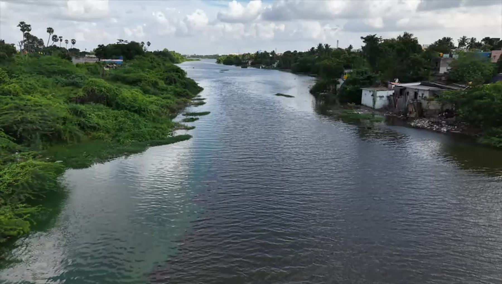
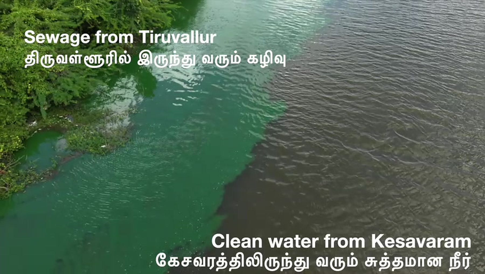
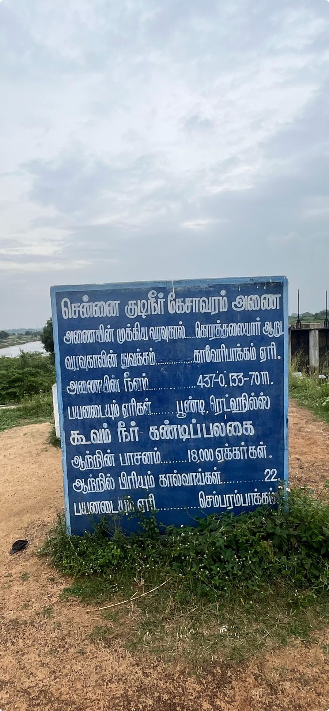
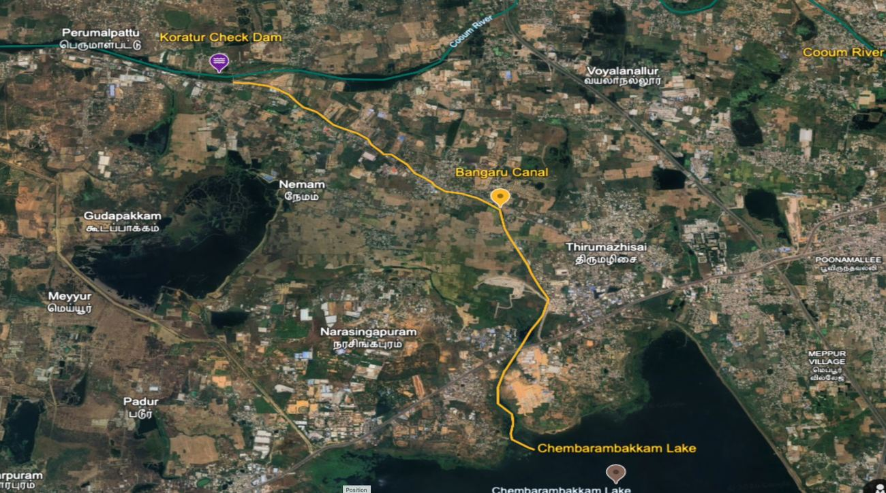
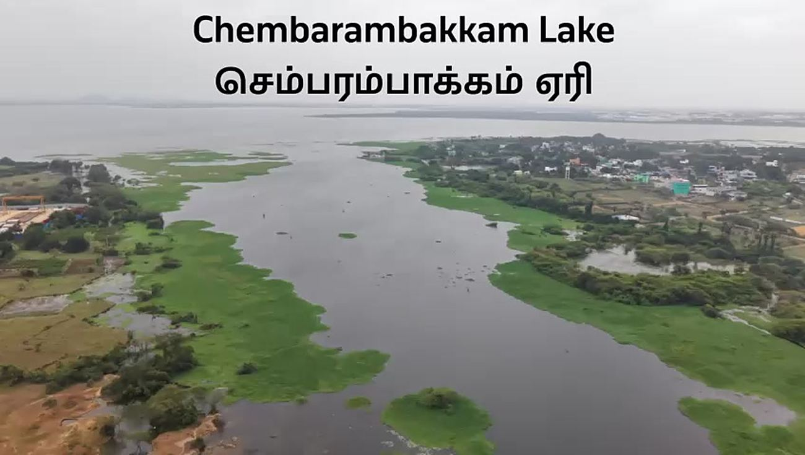

A stretch of the Koovam River between Kesavaram and Chembarambakkam Lake fills roughly one-third of the lake's annual storage — one of Greater Chennai's principal drinking-water reservoirs. Untreated sewage is entering it right now, before the monsoon carries it straight toward the tap.கேசவரத்திற்கும் செம்பரம்பாக்கம் ஏரிக்கும் இடையேயுள்ள கூவம் ஆற்றின் ஒரு பகுதி, பெருஞ்சென்னையின் முக்கிய குடிநீர் நீர்த்தேக்கங்களில் ஒன்றான அந்த ஏரியின் ஆண்டு நீர்வரத்தில் மூன்றில் ஒரு பங்கை நிரப்புகிறது. பருவமழை அதை நேரடியாக குடிநீர் விநியோகத்தை நோக்கி கொண்டு செல்வதற்கு முன், சுத்திகரிக்கப்படாத கழிவுநீர் இப்போதே அதனுள் கலக்கிறது.

This is a single, unedited frame from above the Tiruvallur Check Dam. On the left, sewage from Tiruvallur town. On the right, clean water arriving from Kesavaram Dam. The line between them is the entire case for this campaign.இது திருவள்ளூர் தடுப்பணைக்கு மேலிருந்து எடுக்கப்பட்ட ஒரு படம். இடதுபுறம் திருவள்ளூர் நகரத்திலிருந்து வரும் கழிவுநீர். வலதுபுறம் கேசவரம் அணையிலிருந்து வரும் தூய்மையான நீர். இவை இரண்டையும் பிரிக்கும் அந்தக் கோடுதான் இந்த இயக்கத்தின் முழுமையான காரணம்.
This is not a zero-sum choice between rural and urban interests — protecting this stretch benefits both.இது கிராமப்புற மற்றும் நகர்ப்புற நலன்களுக்கு இடையேயான ஒரு தேர்வு அல்ல — இந்த பகுதியைப் பாதுகாப்பது இரு தரப்பினருக்கும் நன்மை பயக்கும்.
This stretch fills roughly one-third of Chembarambakkam Lake's annual storage — one of Greater Chennai's principal drinking-water reservoirs.இந்தப் பகுதி, பெருஞ்சென்னையின் முக்கிய குடிநீர் நீர்த்தேக்கங்களில் ஒன்றான செம்பரம்பாக்கம் ஏரியின் ஆண்டு நீர்வரத்தில் மூன்றில் ஒரு பங்கை நிரப்புகிறது.
IIT Madras has detected PFAS ('forever chemicals') in Chembarambakkam Lake, linked to untreated sewage discharge upstream.மேலுள்ள பகுதியிலிருந்து வரும் சுத்திகரிக்கப்படாத கழிவுநீருடன் தொடர்புடைய PFAS ('என்றென்றும் நிலைக்கும் ரசாயனங்கள்') செம்பரம்பாக்கம் ஏரியில் இருப்பதை ஐஐடி மெட்ராஸ் கண்டறிந்துள்ளது.
The same river bed is a vital recharge source for Tiruvallur residents living along its banks — independent of the Chennai supply chain.இதே ஆற்றுப் படுகை, சென்னை நீர் விநியோக அமைப்பிலிருந்து சுயேச்சையாக, அதன் கரையோரங்களில் வாழும் திருவள்ளூர் மக்களுக்கு முக்கியமான நிலத்தடி நீர் மறுநிரப்பு ஆதாரமாக உள்ளது.
Source: river system hydrology as documented by Water Resources Department records and Chennai Rivers Restoration Trust.மூலம்: நீர்வளத் துறை பதிவுகள் மற்றும் சென்னை ஆறுகள் மறுசீரமைப்பு அறக்கட்டளை ஆவணப்படுத்திய ஆற்று நீரியல் தகவல்கள்.
Source of the Palar riverபாலாறு தொடங்கும் இடம்
Built by Nandivarman III, ~1,000 years agoசுமார் 1,000 ஆண்டுகளுக்கு முன் நந்திவர்மன் III கட்டியது
Continues to Poondi Reservoirபூண்டி நீர்த்தேக்கத்தை நோக்கிச் செல்கிறது
Flows toward Tiruvallur — the subject of this briefingதிருவள்ளூர் நோக்கிச் செல்கிறது — இந்த அறிக்கையின் மையப் பொருள்

Follow the water from Kesavaram Dam to the exact point where sewage enters — with the official signboard, aerial evidence and maps.கேசவரம் அணையிலிருந்து கழிவுநீர் கலக்கும் சரியான இடம் வரை நீரைப் பின்தொடருங்கள்.
Follow the river →ஆற்றைப் பின்தொடர் →
STP capacities, PFAS findings from IIT Madras, groundwater depletion — and our recommendation to the Honourable Minister.STP திறன்கள், IIT மெட்ராஸ் PFAS கண்டுபிடிப்புகள் — மற்றும் மாண்புமிகு அமைச்சருக்கான எங்கள் பரிந்துரை.
See the evidence →சான்றுகளைப் பார் →
A ready-to-send letter to the Minister in English and Tamil, a shareable fact sheet, and a full press kit for journalists.அமைச்சருக்கு அனுப்பத் தயார் கடிதம், பகிரக்கூடிய தகவல் தாள், பத்திரிக்கையாளர்களுக்கான முழு தொகுப்பு.
Act now →இப்போதே செயல்படு →Videos, cartoons and press coverage — searchable, filterable, and shareable to WhatsApp in one tap. Updated by the campaign as the story develops.காணொளிகள், கார்ட்டூன்கள், பத்திரிக்கை செய்திகள் — தேடக்கூடிய, வடிகட்டக்கூடிய, ஒரே தட்டில் WhatsApp-இல் பகிரக்கூடிய பதிவேடு.
Drone surveys and field footage — every frame is evidence.ட்ரோன் ஆய்வுகளும் களக் காட்சிகளும் — ஒவ்வொரு காட்சியும் சான்று.
Watch →பார் → – RECORD · 02One drawing can say what a hundred reports cannot.நூறு அறிக்கைகள் சொல்லாததை ஒரு ஓவியம் சொல்லும்.
Browse →பார்வையிடு → – RECORD · 03Press coverage tracking the crisis — and the demand to fix it.நெருக்கடியையும் தீர்வுக் கோரிக்கையையும் பதிவு செய்யும் செய்திகள்.
Read →படி →"The Koovam river is our sacred water source. It is our responsibility to protect it." "கூவம் ஆறு நமது புனித நீர் ஆதாரம். அதைப் பாதுகாப்பது நமது பொறுப்பு."We respectfully request the Honourable Minister's support in declaring the Kesavaram–Chembarambakkam stretch a Protected Koovam Drinking Water Zone.கேசவரம்–செம்பரம்பாக்கம் பகுதியை பாதுகாக்கப்பட்ட கூவம் குடிநீர் மண்டலமாக அறிவிப்பதில் மாண்புமிகு அமைச்சர் அவர்களின் ஆதரவை பணிவுடன் கோருகிறோம்.